R and Azure ML - Your One-Stop Modeling Pipeline in The Cloud!
Practical walkthroughs on machine learning, data exploration and finding insight.

Resources
At the risk of being accused of only using Amazon Web Services, here is a look at modeling using Microsoft Azure Machine Learning Studio along with the R programming language. It is chock-full of data munging, modeling, and delivery functions!
If you want to follow along, sign up at AzureML for a free account.
Part 1 - Simple Demo with the Adult Census Income Binary Classification Dataset
Sign into your account at https://studio.azureml.net and follow the following steps:
Click EXPERIMENTS in the left horizontal menu bar:

Click + NEW sign at bottom left of screen to start a new experiment
Choose Blank experiment:
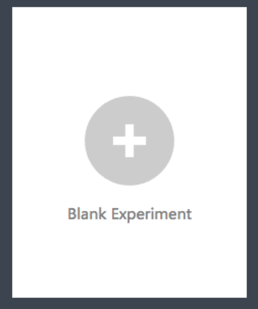
Time to drag-and-drop modeling modules onto the workspace
Select Saved Datasets then Samples and drag Adult Census Income Binary Classification dataset onto your workspace:
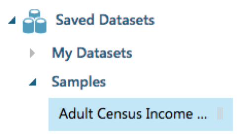
Your workspace should look like:
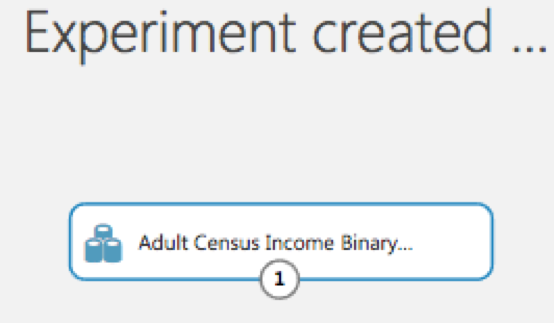
You can right click on the data set to visualize the data.
Select Data Transformation then Sample and Split and drag Split Datat onto your workspace:
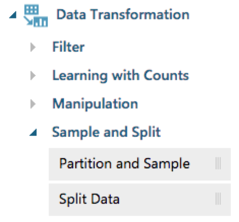
And connect both rectangles together:
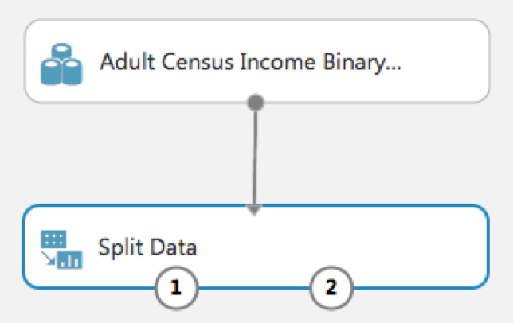
Select Machine Learning then Train and drag Train Model onto your workspace:
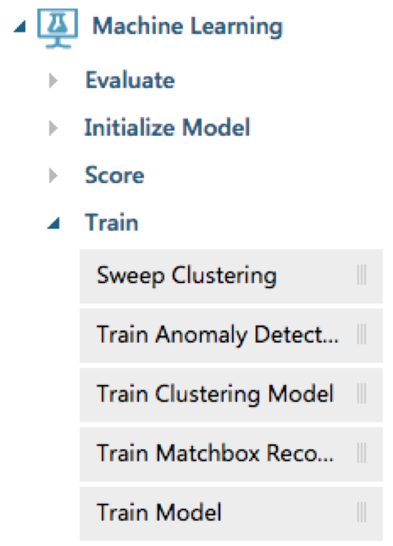
And connect both rectangles as such:
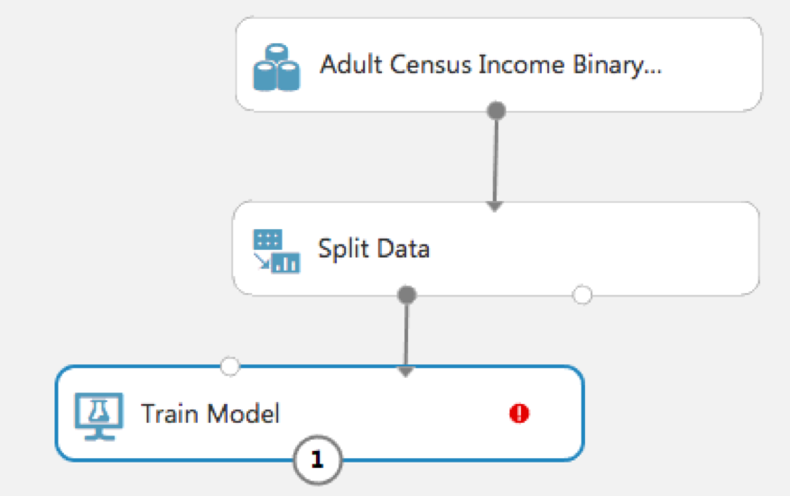
You'll notice the red exclamation point in the last rectangle - this is because you need to tell it what feature is your outcome variable. So click on the red exclamation point and in the right menu pane choose 'income' as outcome:
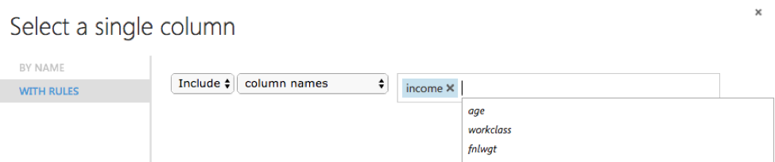
Select Machine Learning then Initialize Model then Classification and drag Two-Class Logistic Regression onto your workspace:
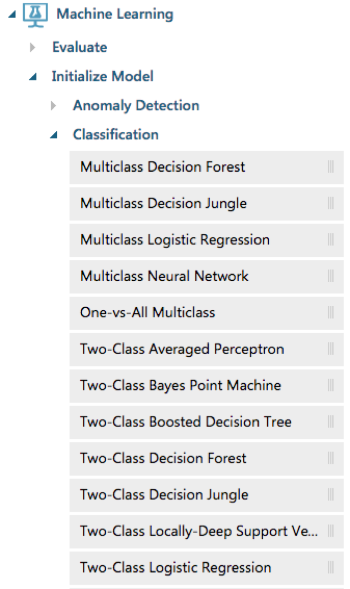
And connect it to the top left of Train Model:
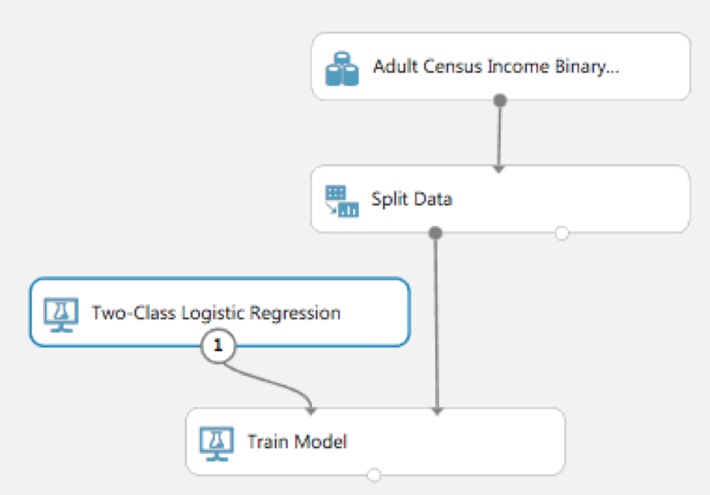
Select Machine Learning then Score and drag Score Model onto your workspace:
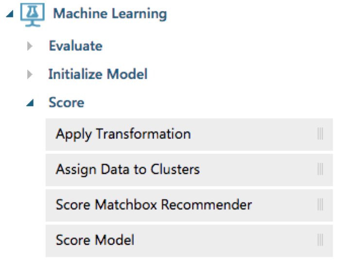
Connect Train Model to top left Score Model and connect Split Data to top right of Score Model. Fun connecting all this, right?:
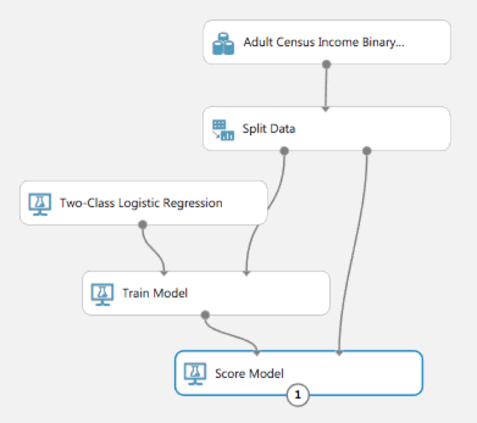
Select Machine Learning then Evaluate and drag Evaluate Model onto your workspace:
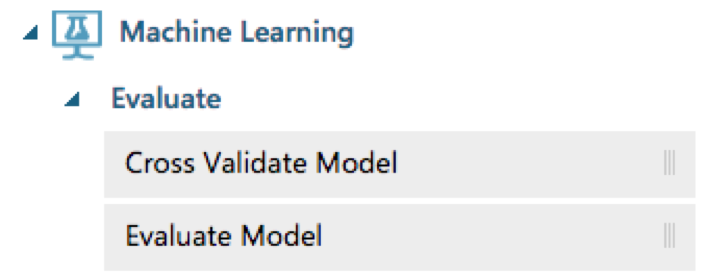
Connect bottom Score Model to top left Evaluate Model:
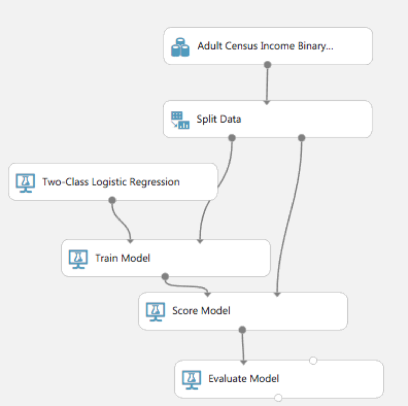
Finally, hit RUN button at bottom middle of Azure ML Studio page:
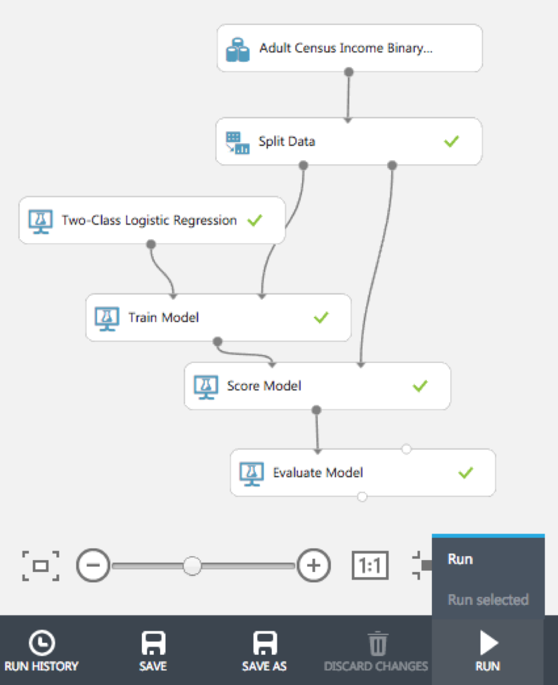
Right click on Evaluate Model and click Evaluation Results - Visualize
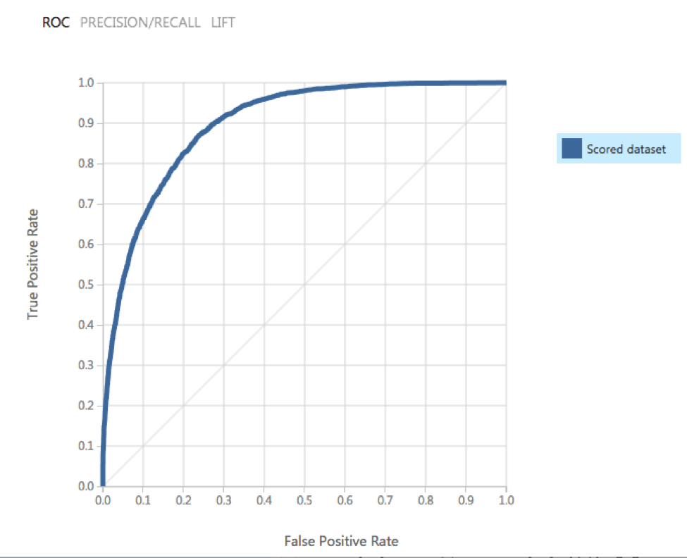
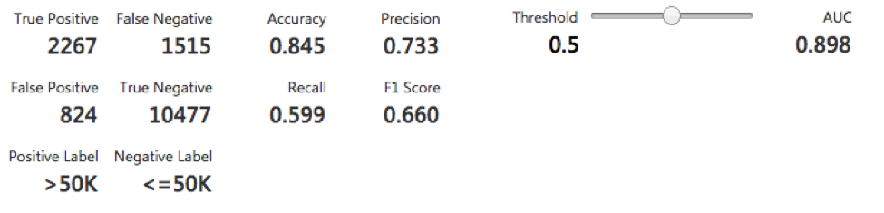
Pretty simple and easy to use, right? Play around with the Threshold slider - great to understand the flexibility and cost of the AUC score.
{% include follow-me.html %}
A More Complex Example Using R
OK – well and done, but what about R? Let's bring in R into AzureML all the while leveraging the pipeline service. Start a new experiment and drag an Execute R Script into the workspace central pane:
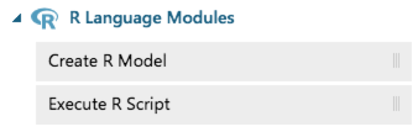
Click on the Execute R Script rectangle and, in the right pane, replace the current R code with this:
titanic_df <- read.csv('http://math.ucdenver.edu/RTutorial/titanic.txt',sep='\t', stringsAsFactors = FALSE)
# creating new title feature
titanic_df$Title <- ifelse(grepl('Mr ',titanic_df$Name),'Mr',ifelse(grepl('Mrs ',titanic_df$Name),'Mrs',ifelse(grepl('Miss',titanic_df$Name),'Miss','Nothing')))
titanic_df$Title <- as.factor(titanic_df$Title)
# impute age to remove NAs
titanic_df$Age[is.na(titanic_df$Age)] <- median(titanic_df$Age, na.rm=T)
# reorder data set so target is last column
titanic_df <- titanic_df[c('PClass', 'Age', 'Sex', 'Title', 'Survived')]
# binarize all factors
charcolumns <- names(titanic_df[sapply(titanic_df, is.character)])
for (colname in charcolumns) {
print(paste(colname,length(unique(titanic_df[,colname]))))
for (newcol in unique(titanic_df[,colname])) {
if (!is.na(newcol))
titanic_df[,paste0(colname,"_",newcol)] <- ifelse(titanic_df[,colname]==newcol,1,0)
}
titanic_df <- titanic_df[,setdiff(names(titanic_df),colname)]
}
# funnel data out the mapOutputPort so it can flow into the other AzureML pipeline objects
maml.mapOutputPort('titanic_df')
We're going to use the R programming language to pull one of my goto-favs datasets, the Titanic manifest, into AzureML programmatically. We're also going to clean it up by doing some minor feature engineering (pulling the title out of the name), imputing and binarizing text files (pivoting).
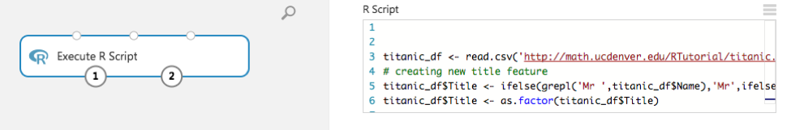
And construct the rest of the machine learning pipeline as follows:
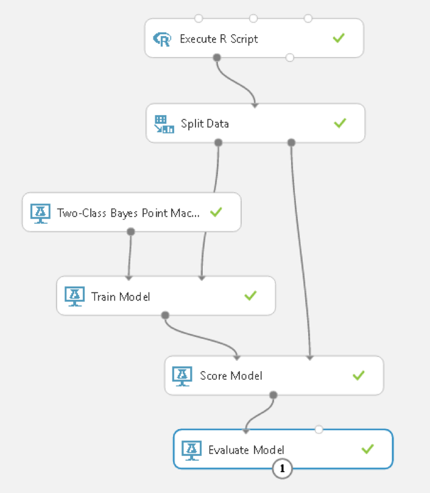
Set the outcome variable to Survived:

And Visualize the Evaluation results:
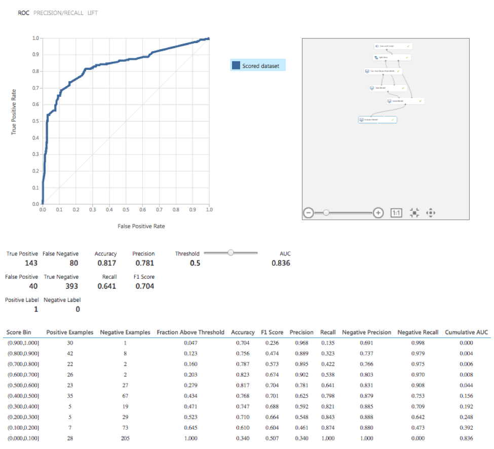
Web Services - Deploying Your Results!
One more thing – one of the best parts of this tool – let’s turn this into a production pipeline where users can call a web service and predictions!
Click on SET UP WEB SERVICE at the bottom of the screen and choose Predictive Web Service [Recommended]:
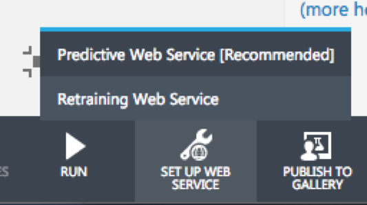
Run it again to push out a web service or else you’ll get a message as follows: The experiment must be run so that your edits can be validated. Then click on Deploy Web Services a second time (phew):
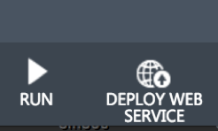
In the left side-bar menu, select WEB SERIVCES
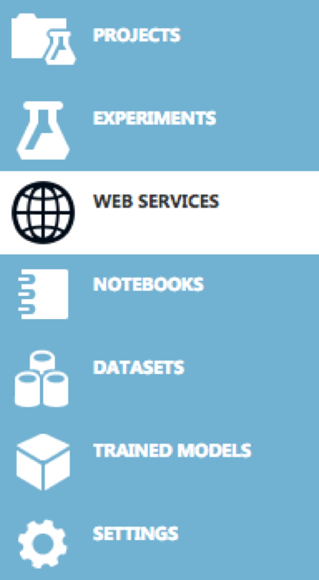
You should see your experiment listed there and click on it:
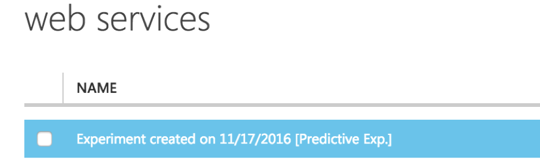
and copy the API key, and click on the REQUEST/RESPONSE link:
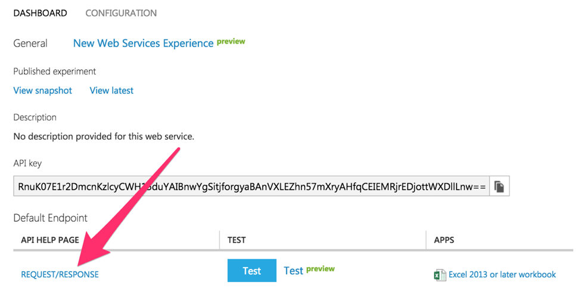
At the bottom of the page, copy the R code and replace the placeholder API key with your own and run the code! That's it!
Additional Resources
Execute R ScriptQuickstart tutorial for the R programming language for Azure Machine Learning
And a big thanks to Lucas for the wonderful - Azure R in the Clouds - artwork!!!
Manuel Amunategui - Follow me on Twitter: @amunategui